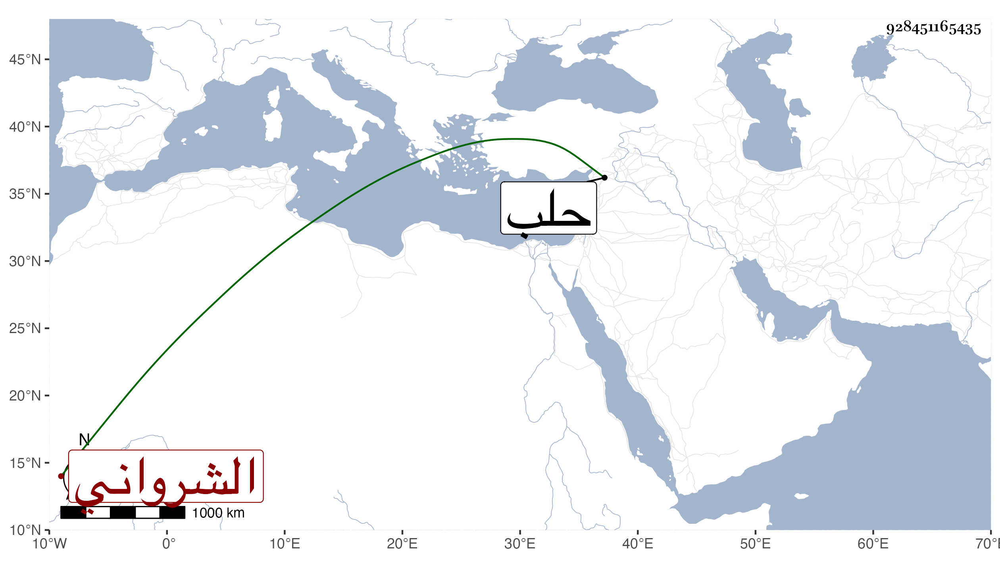

0902Sakhawi.DawLamic.ITO20230111-ara1.EIS1600.928451165435
Biography ID: 928451165435
506
عبد الرزاق الشرواني نزيل الرواحية بحلب وقطنها نحو عشرين سنة وأحد فضلائها الشافعية ممن أخذ عن العلاء البخاري ، وتقدم في العقليات وانتفع به الفضلاء ومنهم الشمس بن أمير حاج الحنفي فإنه أخذ عنه النحو والصرف والمعاني والبيان والمنطق وصاهر عبد الكريم باني المدرسة التي بباب قنسرين على ابنته واستمر حتى مات .
